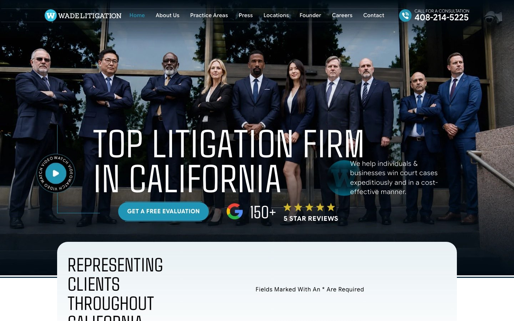
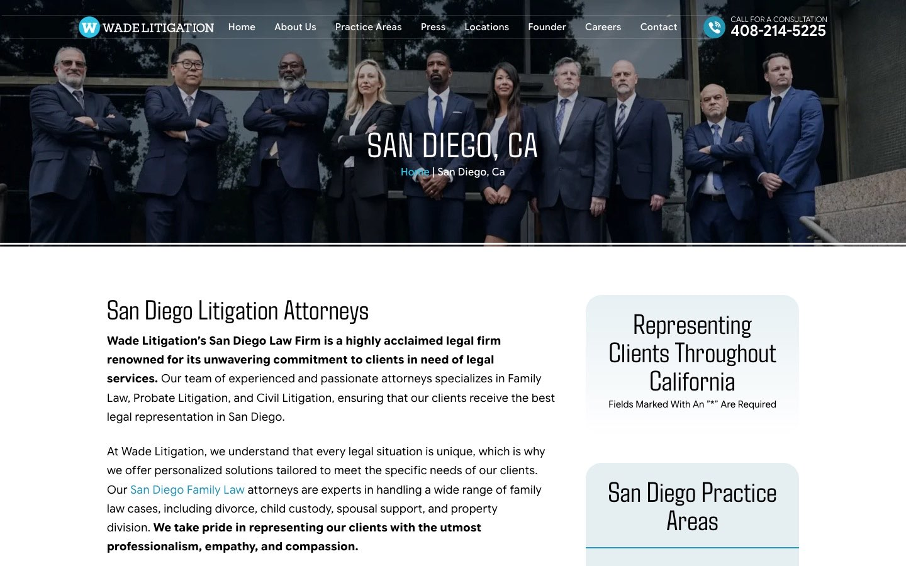

Case study · Law firms
Wade Litigation: location-page SEO and intake for a California litigation firm
A statewide litigation firm site organised around cities: 20 city hub pages, more than 200 city-and-practice pages, one shared intake form, and an audit of how the structure holds up.
At a glance
- Who it's for
- A litigation firm with offices across California that needs each city, and each practice in that city, to have its own findable page and one clear way to ask for a case evaluation.
- Core stack
- WordPress, Elementor Pro on the Hello Elementor theme, Yoast SEO Premium, Gravity Forms, WP Rocket, Cloudflare in front of WP Engine
- What sets it apart
- Location is the main axis of the site: 343 URLs in the page sitemap, 229 of them under /locations/, plus 84 team profiles and 633 blog posts.
The live site
The homepage and one city page, captured in October 2026. Each opens the live page.


The challenge
People looking for a litigation lawyer search by city and by problem: a divorce lawyer in San Diego, a probate lawyer in Los Angeles. A firm with offices across the state has to answer each of those searches with a page that is clearly about that place and that practice, without turning into hundreds of near-identical pages.
The same pages also have to build trust with a visitor who is often stressed, and turn that visit into a contact request, whichever page they landed on.
What is built
The site uses three layers. A homepage and a handful of practice-area pages sit at the top. Below them, each city has a hub page at /locations/<city>/, and below that each city has its own pages per practice, such as /locations/san-diego/divorce-attorney/. The hub pages we compared open with copy written for that city, then share the same sidebar form, practice list, office list and review block.
Every page carries the same call to action: a free evaluation through one Gravity Forms intake form, plus a header phone number.
Key pages and structure
Counts come from the page and post sitemaps; the 16 city pages in the main menu were checked one by one.
- 01
City hub pages
The page sitemap lists 20 hubs: the 16 linked from the menu (Alameda, Beverly Hills, Los Angeles, Los Gatos, Merced County, Modesto, Newport Beach, Redondo Beach, Riverside, Sacramento, San Bernardino, San Diego, San Francisco, San Ramon, Santa Cruz County, Walnut Creek) plus Irvine, Palo Alto, Pleasanton and San Jose.
- 02
City-and-practice pages
208 URLs sit one level below a city (20 hubs plus 208 deeper pages is 228; the 229 /locations/ URLs in the page sitemap appear to include the /locations/ index page itself), for example divorce, child support, restraining order, probate and appeals in San Diego. A sampled page runs to about 4,200 words with an FAQ section.
- 03
Practice-area pages
Top-level pages for divorce, custody, family law, civil, business, real estate and probate litigation, and appeals, plus a practice-areas index.
- 04
Team profiles
84 pages under /our-team/, one per person.
- 05
Proof pages
Reviews, testimonials, video reviews, firm awards, press, case results and a firm-videos page. The homepage hero headline reads "Top Litigation Firm in California".
- 06
Blog
633 posts in the post sitemap, including 74 whose URLs contain "victory", "claims" or "wins", such as case write-ups from past matters.
Technical SEO baseline
What is in place on the live site, confirmed in the page source, robots.txt (the file that tells search engines which areas to skip), sitemaps and response headers.
- City hub/locations/<city>/
- City-and-practice pageService, FAQPage schema
- Yoast SEO Premiumtitles, canonicals, robots meta
- Sitemaps and robotspage and post sitemaps
- Intake formGravity Forms, case-type branching
- Pages checked return a self-referencing canonical (a tag that tells search engines which address is the main one) and a robots meta (a tag that tells search engines whether to index the page) of
index, follow, max-image-preview:large. robots.txt has an empty Disallow and listssitemap_index.xml, which holds a page sitemap and a post sitemap; /sitemap.xml redirects to it. - The homepage emits JSON-LD (structured data that describes the page to search engines): Organization, two LegalService nodes (Los Gatos and Redondo Beach), WebSite, WebPage, a Person node for the founder and BreadcrumbList. The sampled city-and-practice page emits Service, WebPage, ImageObject, FAQPage and BreadcrumbList. The three city hubs checked emit no JSON-LD.
- The intake form is a single Gravity Forms form that asks for name, email, phone, county and location of the case, then branches by case type (family, civil, probate, business, real estate), a free-text concern, consent to be contacted and how the visitor heard about the firm.
Audit findings
Reviewed from public pages in October 2026. Where the structure still has room to improve.
Shared blocks on city hubs
Comparing San Diego with Modesto, Los Gatos and Beverly Hills, the city introductions are different text, but about 88 to 90 percent of the text lines on the page are identical across them: the review block, services list, office list and form. Local detail beyond the intro and a county list is thin.
Heading and title patterns
Hub H1s (the main page headings) read "San Diego, Ca" and carry no practice words; the descriptive heading is the H2 (second-level heading) below. The San Diego title contains "Blog", the Beverly Hills title is formatted "|Law Office|", and the Modesto page reuses the image alt text "Santa Clara County CA".
Maps and office details
Every hub embeds the same seven office maps, starting with Redondo Beach, rather than a map for its own city. The Modesto hub shows opening hours but a local address could not be confirmed.
Phone numbers and name
The header shows 408-214-5225, the consent text gives 888-909-9430, and the schema lists 866-925-4552, 888-705-5059 and 866-784-2624. A script rewrites the number from a URL parameter, which suggests call tracking, but this could not be confirmed. The brand also appears as "Wade Litigation", "Wade Law Group" and, on a 2011 post, "Wade & Silverstein".
Schema coverage
The three hubs checked have no structured data while the deeper pages do. The homepage describes only two of the seven offices with LegalService, and the "150+ 5 Star Reviews" badge has no review or rating markup behind it.
Orphaned parent
The Fremont city-and-practice pages return 200 and appear in the sitemap, but /locations/fremont/ returns 404, so those eight pages have no hub above them.
Image alt text
12 of 87 images on the rendered homepage and 10 of 68 on the San Diego hub have empty alt text, and some use generic labels such as "google icn", "about image" and "Svg Icon". The Open Graph image (the preview picture shown when a link is shared) is the hero banner video still.
Redirect chain and testimonials
https://www.wadelitigation.com/ redirects to http://wadelitigation.com/ and then to https, two hops where one would do. Testimonials on city hubs show initials only (M.W, R.L, L.S, K.S) in H2 tags, which makes headings that say nothing about the page.
Bot protection
The site sits behind Cloudflare. Headless Chrome and plain requests with a full browser user agent string both returned the pages we reviewed, while a bare short user agent string was challenged with a 403; how a default client or search crawler is treated could not be confirmed. Worth checking that crawlers are not challenged.
Technology stack
Taken from page source, generator tags and response headers.
- Platform
- WordPress
- Elementor 4.3.5
- Elementor Pro
- Hello Elementor theme
- SEO
- Yoast SEO Premium 28.7
- JSON-LD schema
- XML sitemaps
- Leads and analytics
- Gravity Forms
- ActiveCampaign forms
- Google Analytics (Premium plugin)
- Facebook Pixel
- UTM capture
- Speed and hosting
- WP Rocket 3.23
- WP Engine
- Cloudflare
Business value
What the setup enables. No ranking or traffic numbers are claimed.
- Gives every city, and every practice in that city, its own indexable URL with a self-referencing canonical.
- Keeps one intake form and one set of proof blocks across the whole site, so a change appears to be made once.
- Offers deeper pages with FAQ and service markup that may answer specific local questions.
- Turns the audit into a short list: fix the orphaned Fremont pages, add local detail and schema to hubs, and tidy titles and alt text.
Part of the same site network
Four related California legal sites reviewed the same way.
- 01
Legal Cali
Multi-practice law firm SEO.
- 02
Awarded Attorneys
WordPress and technical SEO for a civil litigation brand.
- 03
California Probate Attorneys
Niche WordPress SEO for a probate-only site.
- 04
California Civil Attorneys
Service-page SEO for a civil litigation site.
Need SEO and WordPress work like this?
Tell us what the site needs to do and we will scope it with you on a call.